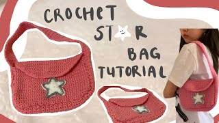

Star Purse/Messenger Bag
üßµ Materials:
- Weight 4 (medium yarn) in 2 colors
- 5 mm crochet hook
- Darning needle
- Scissors
- Optional: metal clasps / buttons
Abbreviations:
- ch - chain
- sl st - slip stitch
- sc - single crochet
- hdc - half double crochet
- dc - double crochet
- tc - treble crochet
- sc2tog - single crochet decrease
Instructions:
Start with your main color yarn.
Front Panel:
Round 1:
Ch 38
Sc into 2nd loop from hook, continue sc until end of chain
Round 2-26:
Ch1, sc across row
Fasten off after 26th row.
Back Panel:
Round 1-32:
Repeat the same process for the front panel, but do 32 rows instead of 26.
Round 33-41: (decrease rows)
Sc in 2nd loop from hook and continue across row until there are 2 stitches left.
Sc2tog in last two stitches
Ch 1
Round 42:
If adding a button -- sc 9, ch 2, skip a stitch, sc 9
Not adding button -- regular sc row
Strap:
Ch 7
Sc into 2nd loop from hook and sc until end of chain, ch 1
Do as many sc rows you desire for you strap (I did 164), then fasten off
* Remember the strap will wrap around bottom of bag *
Star Applique
Make a magic circle, ch 3, dc 14 into circle
Sl st into 1st stitch and pull tail to form circle
For each arm of star:
Ch 5, sc into 2nd stitch from hook, hdc, dc, tc, sl st into 3rd stitch from your chain 5
Repeat 4x more
Fasten off
Sl st your accent color yarn to the top of one side of the star
Sl st along each stitch to create an outline on the outside of the star
Sl st into 1st stitch, fasten off
Assembling it all together: *I recommend watching video at 8:49*
Hopefully this terribly drawing of mine gives an adequete overview of the steps.
Step 1:
Cut main main color yarn of length greater than your strength (be generous!) and insert into darning
Stitch the front panel and strap together with darning needle (start from a top corner and go around the
sides and bottom of the front panel)
Fasten off when you reach the other side of the front panel.
Step 2:
Line up back panel and stitch it onto the other side of the strap (be sure to line it up with the front panel).
Fasten off when done.
Step 3:
Make sure the strap is not twisted.
Line up strap and overlap it onto the bag
Use darning needle yarn and stitch across to attach.
Step 4: Flip bag inside out
Add buttons or metal clasps (optional)
To attach star:
Use darning needle and accent color yarn to go between the outline of the star, inserting your needle through
both the star and the bag.
See video for better visual explanation at 13:00.